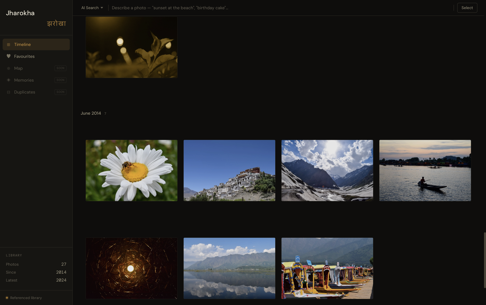

I’ve always been someone who likes to build, break, and understand things. Usually, that means deploying anti-fraud models or tinkering with LLMs, but recently, I hit a very domestic wall: the "Cloud Storage Full" notification. I wanted the slick experience of Google Photos—natural language search, face grouping, and timeline views—without the recurring subscription or the feeling that my memories were being held hostage.
So, I built Jharokha (झरोखा). It’s a self-hosted photo management app designed to index my library exactly where it lives—on my external drives and Mac—without moving files or charging a premium for the privilege. More than just solving a storage problem, I started this project because I wanted to learn and get my hands dirty with a full-stack architecture.

Design Constraint: Offline-First Browsing
A subtle but important constraint of my setup is that my external hard drive isn’t always connected. I wanted to ensure that my browsing experience didn't break just because I was on the move.
To solve this, Jharokha generates local WebP thumbnails stored directly on my Mac. This means I can scroll through my entire timeline and see every memory even when the "source of truth" drive is sitting on my desk at home. The metadata remains accessible, and the app is smart enough to know its limits: while I can browse anytime, I can only perform "heavy" actions like deleting pictures or exporting originals when the drive is physically connected. It’s a clean way to keep the library maintained without risking de-syncs.
The Architecture: Python, Svelte, and "No-Move" Indexing
The core philosophy of Jharokha is that it's a referenced library. Unlike traditional apps that import and duplicate your photos, Jharokha simply indexes them using SHA256 hashes as identities. This means if I have a duplicate, it's flagged by content, not filename.
- The Backend: Built with FastAPI and SQLAlchemy. It handles the heavy lifting—extracting EXIF data, reverse geocoding, and managing the SQLite database.
- The Frontend: A dense, "app-like" UI built with Svelte 5 and Tailwind CSS. I used a justified row grid (think Apple Photos) that preserves aspect ratios without awkward cropping.
- The Pipeline: A robust ingestion system that handles everything from HEIC files to the messy sidecar JSONs you get from a Google Takeout dump. For photos with GPS coordinates, I use the Nominatim API (via geopy) to reverse-geocode the location, storing everything from the neighborhood to the country in a local SQLite cache.
This was my first time using Poetry for dependency management, and it’s been a revelation; the deterministic builds and clean CLI have convinced me to move all my future projects to it.
Adding the "Magic": Semantic Search & ML
A photo library is only as good as its search bar. I started with filename, location and time-based search, but I wanted to see what's possible with semantic search. I integrated CLIP via HuggingFace to enable semantic search.
By generating vector embeddings and storing them in ChromaDB, I can search for things like "scuba diving" or "cricket match under stadium lights". The backend uses cosine similarity to find the best matches, returning results that traditional EXIF metadata would never catch.
However, working with CLIP in a production-like setting was a reality check. While it enables some incredibly cool searches, it is far from perfect—it can be temperamental with specific queries. It’s an area I’m excited to dig deeper into as I refine the models.
Solving the "Apple Problem"
One of the most satisfying parts of this project was "breaking" the problem of Live Photos and video timestamps. macOS and iOS often create ._ AppleDouble files or weird UTC offsets in video containers. I wrote custom scripts to pair .heic stills with their .mov counterparts, ensuring they share the same metadata and chronological spot in my timeline.
What’s Next?
Jharokha is currently in a "functional MVP" state. I’m using it to manage a real library with over 5k photos. Next on the terminal? Implementing face recognition, a memories feature for daily and weekly reminders, and eventually packaging it with Tauri to make it a true desktop experience.
It’s a work in progress, just like all of us.
The code for the project can be found here.